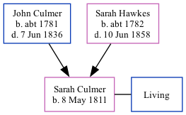

Sarah Dadds (née Culmer) 1811 -
[ Home ] | [ Calendar ] | [ Surnames Index ] | [ Family History ]The daughter of John Culmer (a parish clerk) and Sarah HawkesSarah Culmer, the four times great-aunt of Nigel Horne, was born in Stourmouth, Kent, England on May 8, 18111 and baptized there at All Saints on May 17, 1811. She married William Dadds there at All Saints, on Oct 1, 18282.
Parents
- John was born c. 1781
- Sarah Anne was born c. 1782
Citations
- Kent, England, Tyler Index to Parish Registers, 1538-1874 Online publication - Provo, UT, USA: Ancestry.com Operations, Inc., 2010. This collection was indexed by Ancestry World Archives Project contributors.Original data - Frank Watt Tyler. The Tyler Collection. Canterbury, Kent, England: The Institute of Herald
- Kent, Canterbury Archdeaconry marriages 1538-1928 - Findmypast
Media
Kent, Canterbury Archdeaconry marriages 1538-1928 - GBPRS/CANT/M/97195376/2
England Marriages 1538-1973 - R_848222903/2
Kent, Canterbury Archdeaconry baptisms 1538-1912 - GBPRS/CANT/B/96716032
Family Tree
Generated by ged2site. Last updated on Nov 13, 2024